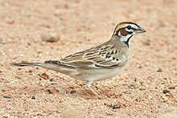
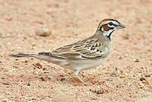

| Lark Sparrow | |
|---|---|
|  | |
| Conservation status | |
| Binomial name | |
| Chondestes grammacus (Say, 1823) |
| Lark Sparrow | |
|---|---|
|  | |
| Conservation status | |
| Binomial name | |
| Chondestes grammacus (Say, 1823) |
The Lark Sparrow (Chondestes grammacus) is a fairly large American sparrow. It is the only member of the genus Chondestes.
This passerine bird breeds in southern Canada, much of the United States, and northern Mexico. It is much less common in the east, where its range is contracting. The populations in Mexico and adjacent states of the United States are resident, but other birds are migratory, wintering in the southern United States, Mexico and south to Guatemala.
It is a very rare vagrant to western Europe, with two accepted records in Great Britain in 1981 and 1991.
Lark Sparrow is distinctive. Adults have a typically sparrow-like dark-streaked brown back, and white underparts except for a dark central spot. The cheeks and crown sides are chestnut, with white eyebrow and crown stripes. The dark tail's corners are also white. Young Lark Sparrows are duller, and the underparts are streaked.
These birds forage on the ground or in low bushes. They mainly eat seeds, but insects, including grasshoppers are also eaten in the breeding season. They form flocks on migration or in winter.
The breeding habitat is a variety of open habitats including grasslands and cultivation. Lark Sparrows nest on the ground, laying 3-6 eggs in a grass cup nest sheltered by a clump of grass or other vegetation. The eggs are white with black scrawling.
The song is two clear notes followed by a mixture of buzzes and trills. The flight call is a thin sit.

{kind=link}